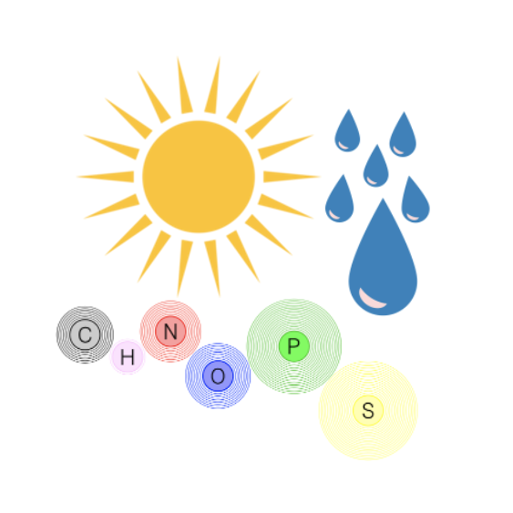

I'm Frances Rigby, a final-year PhD Student at the Institute of Astronomy, University of Cambridge, supervised by Prof. Nikku Madhusudhan. My research focuses on the interiors, atmospheres and habitability of exoplanets, especially those in the sub-Neptune regime, between the size of Earth and Neptune.
I was Bye-Fellow of Magdalene College, University of Cambridge 2023-24.
-
Sub-Neptunes
Sub-Neptunes, between the size of Earth and Neptune, are the most abundant class of planet detected, despite the lack of one in our own solar system. My research focuses on this diverse planetary regime.
-

Exoplanet Interiors
Internal structure modelling is used to relate exoplanet observables to their interior compositions. I use a model developed during my PhD to investigate the possible interior and surface conditions of sub-Neptunes.
-

Habitability
Hycean worlds are a class of sub-Neptune with hydrogen-rich atmospheres and water oceans which have the potential to host habitable conditions. I'm interested in the potential for habitability in the sub-Neptune regime, including on hycean worlds.
Toward a self-consistent evaluation of gas dwarf scenarios for temperate sub-Neptunes
Frances E. Rigby et al.
Astrophysical Journal, Volume 975, Issue 1, November 2024, Page 101
On the ocean conditions of Hycean worlds
Frances E. Rigby and Nikku Madhusudhan
Monthly Notices of the Royal Astronomical Society, Volume 529, Issue 1, March 2024, Pages 409–424
Chemical conditions on Hycean worlds
Nikku Madhusudhan, Julianne I. Moses, Frances E. Rigby and Edouard Barrier
Faraday Discussions, Volume 245, 2023, Pages 80-111
JWST Cycle 2 GO Program 3557: A JWST search for missing methane
Nikku Madhusudhan, Julianne I. Moses, Subhajit Sarkar and Frances E. Rigby